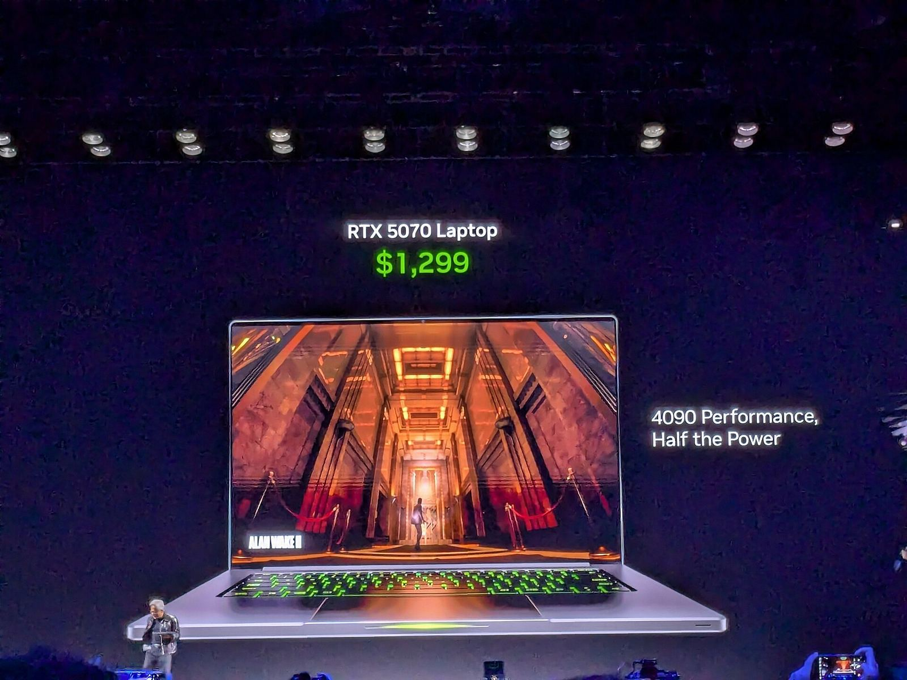

英伟达宣布董事会已恢复黄仁勋的总裁、首席执行官及董事职务，即时生效；向美国证券交易委员会提交的 8-K 写明，董事会于 2026 年 11 月 22 日作出该项决定；新闻稿称董事会在与黄仁勋一系列讨论和会面后一致投票恢复其职务，并在决策过程中收到美国政府高层意见，据此相信恢复其职务不构成国家安全风险；Colette Kress 将继续担任执行副总裁兼首席财务官，Harvey C. Jones 留任董事会主席


英伟达（NASDAQ: NVDA）于 2026 年 11 月 23 日发布新闻稿宣布，黄仁勋（Jensen Huang）已即时恢复担任总裁、首席执行官及董事会成员。公司同日向美国证券交易委员会提交的 Form 8-K 写明：最早事项日期为 2026 年 11 月 22 日；董事会于当日恢复黄仁勋（文件中写为 Jen-Hsun Huang）的总裁、首席执行官及董事职务，即时生效。8-K 并写明，在黄仁勋恢复职务后，Colette Kress（文件中写为 Ms. Kress）将继续担任执行副总裁兼首席财务官。该 8-K 的附件 99.1 为日期为 2026 年 11 月 23 日的新闻稿，文件由执行副总裁兼首席财务官 Colette M. Kress 于 2026 年 11 月 23 日签署。
新闻稿称，董事会在与黄仁勋进行一系列讨论和会面后，对其坦诚（candor）及领导英伟达的能力感到满意，并一致投票恢复其职务。新闻稿还写道，董事会在作出决定的过程中收到美国政府高层的意见，并基于该意见相信，恢复黄仁勋的职务不构成国家安全风险。
董事会主席 Harvey C. Jones 在新闻稿中说：“The Board believes Jensen is the right person to lead NVIDIA, and that his reinstatement is in the best interests of our stockholders, employees, partners and customers.”（董事会认为黄仁勋是领导英伟达的合适人选，恢复其职务符合股东、员工、合作伙伴与客户的最佳利益。）他还表示，董事会对黄仁勋充满信心，期待与他重新领导公司；并感谢 Colette Kress 在担任临时首席执行官期间的出色服务，以及她继续履行首席财务官职责。新闻稿写明，Harvey Jones 将留任董事会主席。
董事会认为黄仁勋是领导英伟达的合适人选，恢复其职务符合股东、员工、合作伙伴与客户的最佳利益。
黄仁勋在新闻稿中说：“I am honored to return to NVIDIA and lead one of the most consequential technology companies in the world at the beginning of a new industrial revolution.”（我很荣幸重返英伟达，在一场新工业革命的开端领导这家世界上最重要的科技公司之一。）他表示将以最大的谦卑和重新确立的承诺承担这一责任，并感谢董事会在这一过程中的信任与审慎，特别感谢 Jones 作为主席的领导，以及 Kress 与管理团队在此期间对英伟达的领导；同时也感谢员工、股东、业界领袖与全球合作伙伴的支持，以及家人的爱与支持。他说：“I can’t wait to get back to work.”
新闻稿回顾称，此前因有报道指黄仁勋曾成为外国情报活动的目标，董事会已设立一个全部由独立董事组成的委员会展开调查，并由该委员会聘请独立律师协助。董事会重申，该委员会的调查将继续进行至结束。黄仁勋完全支持该调查，并承诺予以配合。新闻稿还提到，董事会近期已设立一个全部由独立董事组成的国家安全与出口管制委员会，以监督贸易合规与国家安全风险；该委员会正在聘请具有国家安全事务经验的律师，这些律师还将再聘请国家安全方面的顾问。英伟达并开始寻聘新的首席合规官（Chief Compliance Officer），以统筹全公司的合规工作，并向提名与公司治理委员会汇报。公司表示将继续配合正在进行的政府调查与问询。11 月 12 日宣布黄仁勋辞职及随后的相关摘记，见本站此前报道。
来源
摘记，不是官方媒体。职务变动、投票说明、政府意见的表述、调查安排与新设职位，均转述英伟达 11 月 23 日新闻稿及同日提交的 8-K；8-K 写明董事会于 11 月 22 日作出恢复职务的决定。未转述新闻稿以外媒体对政府介入细节的报道。